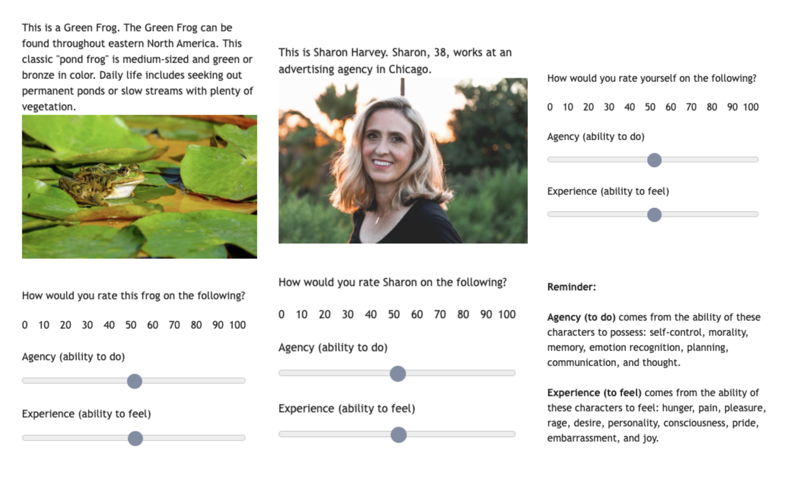
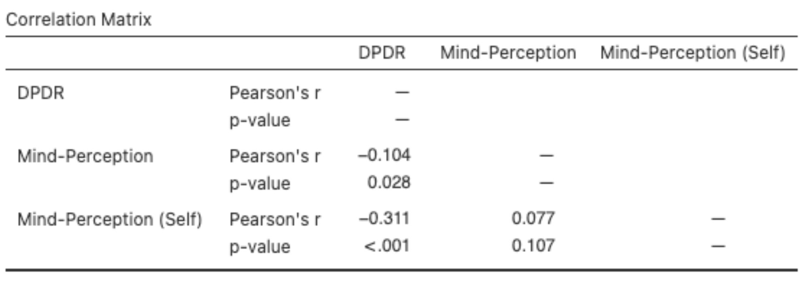
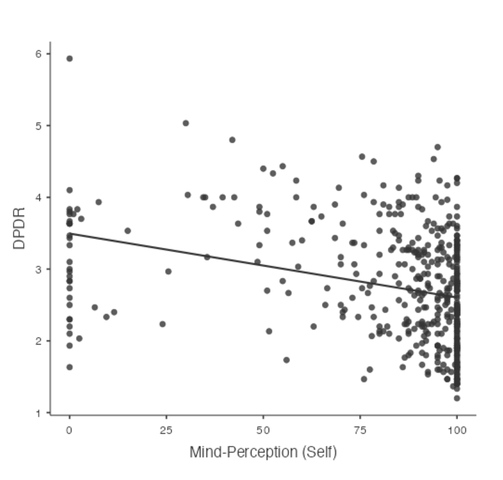

Altered Minds in Digital Spaces
Originally titled ‘Feeling Myself: Increased Occurrence Of Depersonalization/Derealization In A Highly Digitized Age Due To Alterations In Mind-Perception’. Conducted as a ‘Directed Studies in Psychology’ (PSYC 340E) project at the Brain And Reality (BAR) Lab, The University of British Columbia, Vancouver under the supervision of Dr. Farid Pazhoohi and Dr. Alan Kingstone. Submitted April 14, 2023.
Introduction
Have you ever wondered if there was a word for feeling like you were dreaming even when you were fully awake? Have you felt like an observer watching your own actions and mind at work? Chances are that this feeling resembles a more acute phenomenological experience called depersonalization. More precisely, it is a subjective experience characterized by a distinct feeling of disconnectedness from one’s sense of self (depersonalization), and/or from one’s surroundings (derealization) (Mellor, 1988; Sierra, M., & Berrios, G. E., 1998). Paradoxically, the subject feels stuck in one’s own mind yet somehow their own thoughts, experiences, actions and environment also begin to feel unfamiliar, out-of-control, and dream-like. (Ciaunica et al., 2021; Sierra et al., 2004). Extreme cases of depersonalization and derealization experiences (DP/DR, henceforth) can be indicative of Depersonalization-Derealization Disorder (DPD) as recognised in the DSM-5 (American Psychiatric Association, 2022), but experiencing DP/DR can be impairing and distressing for everyone so it is important to understand its causes and mechanisms.
Past research has explored DP/DR through a variety of lenses and perspectives: Guralnik et al. (2000) identify the cognitive processes underlying DP/DR, namely deficits in encoding, memory and perceptual systems; researcher Anna Ciaunica has propounded alterations in self-awareness, consciousness, active inference, contributing a clouded sense of self in DP/DR (Ciaunica et al., 2021, 2022b); DP/DR has been identified as a trauma-response (Shilony and Grossman, 1993; Sierra et al., 2004) and many more. With advancements in technology in the 21st century, contemporary research has linked high digitization in our daily lives, and the consequent social isolation to increasing occurrences of DP/DR.
Ciaunica et al. (2022a) conducted an online study with 622 participants to understand how contextual factors, especially the Covid-19 pandemic, affect the occurrence of DP/DR. They found that digital activity (from video games to social e-meetings alike) positively correlated with feelings of DP as did more sedentary lifestyles. Furthermore, more experiences of depersonalization were correlated to increased vividness of negative (versus positive) emotions.
Previous research has also explored the associations between digital media usage and its impact on other behaviors like de-individuation, anonymity → cyberbullying, self-esteem, etc. (Chan et al., 2022; Super, 2005; Ozimek and Bierhoff, 2020). This brings us to interesting research on mind-perception: the extent to which we perceive others (objects, people, etc.) as having a mind, often characterized by the dimensions of ‘agency’ and ‘ability to experience’ (Gray et al., 2007; 2012). Recently, the research on mind perception addresses how recursive representations (e.g. a person vs a picture or drawing of a person) reduce one’s perception of others’ minds (Will et al., 2021). Mind perception is linked to a variety of social behaviors e.g.gaze cuing, prosocial behavior etc. (Gray et al., 2012). Thinking of DP/DR through the lens of self-perception as suggested by philosophers (Mellor, 1988) and then investigated by psychologists, we find a gap in research i.e. how digital media or recursive representations actually affect perception of one’s own mind and whether these differences in self-awareness/consciousness further relate to occurrence of DP/DR experiences. Simply put, if digital media usage and recursive representations of others cause decreased perceived ‘mind’ leading to harmful online behaviors and moral disengagement, does the same principle lead to a clouded sense of self/own mind perception, and consequently, DP/DR experiences?
Perception of one’s own mind is very relevant to DP/DR since the former’s dimensions cover the main symptoms of the phenomena: feeling alienated from self and own actions (moral agency) and feeling disconnected from reality (moral patiency) (Sierra and Berrios, 2000; Gray et al., 2007). By understanding whether altered mind-perception (whether due to digital/social media use or not) links to DP/DR, we can aim to develop treatments for DP/DR that take into account this maladaptive/hampered awareness or perception of one’s own mind. In this paper, I will carry out preliminary research to explore whether the perception of one’s own mind, and mind-perception abilities in general, do indeed relate with frequency of DP/DR. To answer this question, I will conduct a study measuring participants’ state DP/DR symptoms, their mind-perception ratings on dimensions of agency and experience for various objects/people as well as themselves. In this correlational design, the predictor variable is mind-perception, and the outcome variable of interest is the state DP/DR of participants. The study will be online, presenting individuals with images of objects and people which is one abstraction level deeper than which we experience reality (Level 0). Since recursive representation has already been linked to decreases in mind-perception ratings (Will et al., 2021), we have avenues for future research by adding more levels of abstraction and considering whether mind-perception scores mediate DP/DR effects felt by the use of digital media.
Based on the above-mentioned current understandings of the two concepts, I hypothesize that participants’ DP/DR scores would be negatively correlated to their mind-perception rating(on both agency and experience scales), and that this correlation will be especially significant between DP/DR and mind-perception ratings for one’s own self. In other words, the research hypothesis is that the lower the perception of others’/and own minds as having both agency and experiential ability, the higher the symptoms of DP/DR felt.
Methods
Design
The study uses a correlational design; the predictor variable is mind-perception, and the outcome variable is state DP/DR symptoms. The study was conducted using an online survey on Qualtrics software (version 2022 of Qualtrics, Provo, UT, USA. https://www.qualtrics.com).
Subjects
A total of 445 undergraduate students (310 women, 129 men, and 6 self-identified as ‘other’), aged between 18 and 50 years (M = 20.22, SD = 3.17), from the University of British Columbia gave their written consent and participated in this study in exchange for course credit. A total of 288 participants (64.7%) reported being single, and 152 (34.1%) reported being in a relationship. Additionally, 4 participants reported being married, and 1 person reported being separated.
Measures
Mind Perception
The present study adopts the two-dimensional framework of mind-perception (Gray et al., 2007), which was the result of a large-scale survey collecting mind-perception data. Considering that this framework accounts for both the ‘moral agency’ and ’moral patiency’aspects of the perceived realness of minds, I operationalized mind-perception by ratings of perceived 1) agency (ability to do) and 2) experience (ability to feel) on a scale of 1 to 100 (Gray et al., 2007). If indeed the predictor and outcome variables are correlated, then, in line with the research hypothesis, I predict that participants experiencing DP/DR would attribute lower agency and experience to themselves, and to other objects and people as well.
DP/DR
To measure DP/DR, all participants completed a modified version of the Cambridge Depersonalization Scale (CDS-29; Sierra and Berrios, 2000). The CDS-29 is a standardized questionnaire with 29 items measuring the frequency (from “never” to “all the time”) and duration (from “for a few seconds” to “more than a week”) of depersonalization or derealization experiences. The total score of a participant is calculated by summing all of the items. This questionnaire aims to gauge the severity of occurrence, however, the present study aimed to understand whether the participants felt any DP/DR symptoms whilst completing the online survey. Thus, the items were modified to a 7-point Likert scale for the same questions where participants rated whether they felt a particular symptom from “Strongly Disagree” to “Strongly Agree.” Each participant’s DP/DR score was calculated as an average of the Likert ratings for each item. This is a major limitation of the study as there has been no research to measure the validity of CDS-29 as a measure of state DP/DR and it is not even understood whether DP/DR can be felt and identified by a person as it is occurring in the present. However, the CDS-29 is the most sophisticated measure available yet for the phenomena with four sub-scales identified within it: ‘Anomalous Body Experience’, ‘Emotional Numbing’, ‘Anomalous Subjective Recall’, and ‘Alienation from Surroundings’ (Sierra et al., 2005).
Procedure
As mentioned above, participants completed the survey online on Qualtrics software (version 2022 of Qualtrics, Provo, UT, USA. https://www.qualtrics.com). Firstly, they filled out a consent form, followed by a demographics form. This was a within-subjects design as each participant was exposed to the CDS-29 DP/DR questionnaire first which included questions like ‘Parts of my body feel as though they don’t belong to me’ and ‘I feel as if I have no thoughts at all and that all my responses/reactions are being given by an ’automaton’ (Sierra and Berrios, 2000), and participants rated their agreement with these statements on a scale of 1 to 7 (strongly disagree to strongly agree). This was followed by 39 questions (adapted from Gray et al., 2007) rating given items’ agency and experience for mind-perception. Each question was also accompanied by a reminder about the definitions of Agency and Experience. (see Figure 1 for examples). Two questions in total measured the ratings of mind-perception for one’s own self.
 Figure 1: Examples of questions on the mind-perception scale (and accompanying reminder of definitions)
Results
To quantify the linear association between the two variables, a correlation analysis was done. DP/DR being an ordinal variable was quantified into 1-7 on a point scale, and mind-perception ratings were measured as continuous from 0-100. The Pearson correlation coefficient was used to quantify this association.

Table 1: Correlation Matrix
The average DP/DR score was \(M = 2.76, \; SD = 0.80\). The average mind perception score was \(M = 64.12, \; SD = 9.36\). As displayed in Table 1, DP/DR was negatively correlated with mind-perception, \(r = -0.104, \; p < .05\). Further, the relationship between DP/DR and mind-perception of one’s own self was significant, \(r = -0.311, \; p < .001\). This means that the lower one’s rating of mind perception (agency and experience), their state DP/DR experiences were significantly higher. This relationship is illustrated in Figure 2. Interestingly, the mode for the dataset of mind-perception scores for oneself is \(100\), though over 25 participants rated themselves \(0\) on both agency and experience dimensions. The average DP/DR score for the participants who rated their own agency and experience to be \(0\), was \(3.08\).
 Figure 2: Scatterplot depicting a linear association between mind-perception (self) and DP/DR.
Discussion
In this study, I explored whether there was a relationship between two concepts; mind-perception, and depersonalisation-derealisation. To this aim, this study measured people’s self-reported feelings of DP/DR, and mind-perception ratings across dimensions of agency and experience for various objects/people. Specifically, the ratings for people’s own perceived agency and experience were of interest. Altogether, the results indicated a negative correlation between mind-perception and DP/DR, and this relationship is especially significant for the ratings of own mind-perception and DP/DR. This is consistent with literature that has discussed the symptomology and dimensions of both phenomena respectively as discussed in the introduction; the dimensions of mind-perception seem to be closely aligned with symptom clusters identified for DP/DR especially the ‘Anomalous Body Experience’ and ‘Emotional Numbing’ CDS-29 subscales with the ‘agency’ dimension of mind-perception, and the ‘Alienation from Surroundings’ CDS-29 subscale with the ‘experience dimension of mind-perception.’ (Sierra et al., 2005; Gray et al., 2007).
Given that this correlational study was only a preliminary to research connecting these two concepts, there cannot be any causal conclusions drawn from it, although there are several new avenues for research that open up. One problem with correlational design, of course, is the third-variable problem in which recursive representations through the use of digital media might be causing both mind-perception and DP/DR to covary (Will et al., 2021). In fact, a number of other variables could possibly be involved in the mechanisms of DP/DR and mind-perception, but the association may still be used to predict and prevent the negative outcomes accompanying both phenomena. Future studies could study how mind-perception measures differ in various situations, for example, online survey, virtual reality, in lab, naturalistic environment etc. and whether these consequently affect occurrence of DP/DR. Additionally, a longitudinal study much like Ciaunica et al. (2022a) could study people’s lifestyle habits including digital media usage and how this affects people’s perception of their own mind, body, and surroundings.
There have been several treatments suggested to help diagnose or treat DP/DR (see Medford et al., 2005) and this study suggests that there are avenues to mending one’s own perception of mind, specifically fostering feelings of agency/the ability to do, and ability to experience/feel, as a clinical approach to DP/DR. Alternatively, changes in mind-perception may be due to dissociative phenomena like DP/DR (since we cannot draw causal links with just the current study) and could possibly be approached with cognitive-behavioral therapy and mindfulness approaches (Medford et al., 2005; Hunter et al., 2014).
Finally, a more rigorous measure of mind-perception of oneself may be utilized to study the mechanisms of DP/DR in future research especially considering that the current study only asks two items to measure this. There could be explorations of how perceiving others’ as lacking agency or experience i.e. lower ‘mind’ attribution, could be related to own agency and experience. In conclusion, this study provides a stepping point for research on DP/DR mechanisms with respect to mind-perception, especially that of oneself establishing a significantly negative correlation between the two as hypothesized. The results and implications are discussed, including avenues for future research in domains. After all, it is no wonder that understanding perceptions of oneself would be crucial to an acute phenomenon that is characterized by losing oneself, and one’s connection to one’s reality.
References
American Psychiatric Association. (2022). Diagnostic and statistical manual of mental disorders (5th ed., text rev.). https://doi.org/10.1176/appi.books.9780890425787
Chan, T. K. H., Cheung, C. M. K., Benbasat, I., Xiao, B., & Lee, Z. W. Y . (2022). Bystanders join in cyberbullying on social networking sites: The deindividuation and moral disengagement perspectives. Information Systems Research, https://doi.org/10.1287/isre.2022.1161
Ciaunica, A., Charlton, J., & Farmer, H. (2021). When the window cracks: Transparency and the fractured self in depersonalisation. Phenomenology and the Cognitive Sciences, 20(1), 1-19. https://doi.org/10.1007/s11097-020-09677-z
Ciaunica, A., McEllin, L., Kiverstein, J., Gallese, V ., Hohwy, J., & Woźniak, M. (2022a). Zoomed out: digital media use and depersonalization experiences during the COVID-19 lockdown. Scientific Reports, 12(1). https://doi.org/10.1038/s41598-022-07657-8
Ciaunica, A., Seth, A., Limanowski, J., Hesp, C., & Friston, K. J. (2022b). I overthink—Therefore I am not: An active inference account of altered sense of self and agency in depersonalisation disorder. Consciousness and Cognition, 101, 103320-103320. https://doi.org/10.1016/j.concog.2022.103320
Guralnik, O., Schmeidler, J., & Simeon, D. (2000). Feeling Unreal: Cognitive Processes in Depersonalization. American Journal Of Psychiatry, 157(1), 103-109. https://doi.org/10.1176/ajp.157.1.103
Gray, H. M., Gray, K., & Wegner, D. M. (2007). Dimensions of mind perception. Science (American Association for the Advancement of Science), 315(5812), 619-619. https://doi.org/10.1126/science.1134475
Gray, K., Young, L., & Waytz, A. (2012). Mind perception is the essence of morality. Psychological Inquiry, 23(2), 101-124. https://doi.org/10.1080/1047840X.2012.651387
Hunter, E. C. M., Salkovskis, P. M., & David, A. S. (2014). Attributions, appraisals and attention for symptoms in depersonalisation disorder. Behaviour Research and Therapy, 53, 20-29. https://doi.org/10.1016/j.brat.2013.11.005
Medford, N., Sierra, M., Baker, D., & David, A. S. (2005). Understanding and treating depersonalisation disorder. Advances in Psychiatric Treatment : The Royal College of Psychiatrists’ Journal of Continuing Professional Development, 11(2), 92-100. https://doi.org/10.1192/apt.11.2.92
Mellor, C. (1988). Depersonalisation and Self-Perception. British Journal Of Psychiatry, 153(6), 845-846. https://doi.org/10.1192/s0007125000224574
Ozimek, P., & Bierhoff, H. (2020). All my online-friends are better than me - three studies about ability-based comparative social media use, self-esteem, and depressive tendencies. Behaviour & Information Technology, 39(10), 1110-1123. https://doi.org/10.1080/0144929X.2019.1642385
Qualtrics. (2005). QualtricsVersion (2022). Retrieved 2022, from https://www.qualtrics.com/
R Core Team (2021). R: A Language and environment for statistical computing. (Version 4.1) [Computer software]. Retrieved from https://cran.r-project.org. (R packages retrieved from MRAN snapshot 2022-01-01).
Salami, A., Andreu-Perez, J., & Gillmeister, H. (2020). Symptoms of depersonalisation/derealisation disorder as measured by brain electrical activity: A systematic review. Neuroscience and Biobehavioral Reviews, 118, 524-537. https://doi.org/10.1016/j.neubiorev.2020.08.011
Shilony, E., & Grossman, F. K. (1993). Depersonalization as a defense mechanism in survivors of trauma. Journal of Traumatic Stress, 6(1), 119-128. https://doi.org/10.1002/jts.2490060110
Sierra, M., & Berrios, G. E. (1998). Depersonalization: Neurobiological perspectives. Biological Psychiatry (1969), 44(9), 898-908. https://doi.org/10.1016/S0006-3223(98)00015-8
Sierra, M., & Berrios, G. E. (2000). The cambridge depersonalisation scale: A new instrument for the measurement of depersonalisation. Psychiatry Research, 93(2), 153-164. https://doi.org/10.1016/S0165-1781(00)00100-1
Sierra, M., David, A., & Hunter, E. (2004). The epidemiology of depersonalization and derealization. Social Psychiatry And Psychiatric Epidemiology, 39(1), 9-18. https://doi.org/10.1007/s00127-004-0701-4
Sierra, M., Baker, D., Medford, N., & David, A. S. (2005). Unpacking the depersonalization syndrome: An exploratory factor analysis on the cambridge depersonalization scale. Psychological Medicine, 35(10), 1523-1532. https://doi.org/10.1017/S0033291705005325
Simeon, D., Kozin, D. S., Segal, K., Lerch, B., Dujour, R., & Giesbrecht, T. (2008). De-constructing depersonalization: Further evidence for symptom clusters. Psychiatry Research, 157(1), 303-306. https://doi.org/10.1016/j.psychres.2007.07.007
Suler, J. (2005). The online disinhibition effect. International Journal of Applied Psychoanalytic Studies, 2(2), 184-188. https://doi.org/10.1002/aps.42
The jamovi project (2022). jamovi. (Version 2.3) [Computer Software]. Retrieved from https://www.jamovi.org.
Waytz, A., Gray, K., Epley, N., & Wegner, D. (2010). Causes and consequences of mind perception. Trends In Cognitive Sciences, 14(8), 383-388. https://doi.org/10.1016/j.tics.2010.05.006
Will, P., Merritt, E., Jenkins, R., & Kingstone, A. (2021). The Medusa effect reveals levels of mind perception in pictures. Proceedings Of The National Academy Of Sciences, 118(32). https://doi.org/10.1073/pnas.2106640118